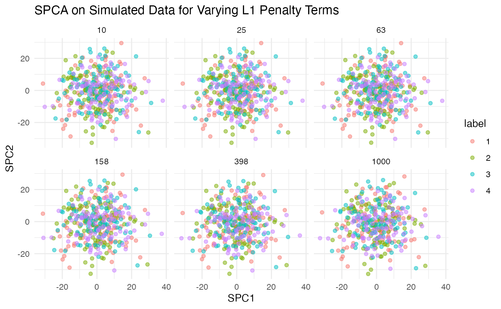

Sparse contrastive principal components analysis
Philippe Boileau, Nima Hejazi, William Krinsman
2019-04-21
Source:vignettes/scpca_intro.Rmd
scpca_intro.RmdIntroduction
## here() starts at /home/nsh/git/scPCA## ── Attaching packages ────────────────────────────────── tidyverse 1.2.1 ──## ✔ ggplot2 3.1.1 ✔ purrr 0.3.2
## ✔ tibble 2.1.1 ✔ dplyr 0.8.0.1
## ✔ tidyr 0.8.3 ✔ stringr 1.4.0
## ✔ readr 1.3.1 ✔ forcats 0.4.0## ── Conflicts ───────────────────────────────────── tidyverse_conflicts() ──
## ✖ dplyr::filter() masks stats::filter()
## ✖ dplyr::lag() masks stats::lag()## Loading scPCA##
## Attaching package: 'testthat'## The following objects are masked from 'package:devtools':
##
## setup, test_file## The following object is masked from 'package:dplyr':
##
## matches## The following object is masked from 'package:purrr':
##
## is_null## Loading required package: lars## Loaded lars 1.2## Loading required package: magrittr##
## Attaching package: 'magrittr'## The following objects are masked from 'package:testthat':
##
## equals, is_less_than, not## The following object is masked from 'package:purrr':
##
## set_names## The following object is masked from 'package:tidyr':
##
## extract## Loading required package: SummarizedExperiment## Loading required package: GenomicRanges## Loading required package: stats4## Loading required package: BiocGenerics## Loading required package: parallel##
## Attaching package: 'BiocGenerics'## The following objects are masked from 'package:parallel':
##
## clusterApply, clusterApplyLB, clusterCall, clusterEvalQ,
## clusterExport, clusterMap, parApply, parCapply, parLapply,
## parLapplyLB, parRapply, parSapply, parSapplyLB## The following objects are masked from 'package:dplyr':
##
## combine, intersect, setdiff, union## The following objects are masked from 'package:stats':
##
## IQR, mad, sd, var, xtabs## The following objects are masked from 'package:base':
##
## anyDuplicated, append, as.data.frame, basename, cbind,
## colMeans, colnames, colSums, dirname, do.call, duplicated,
## eval, evalq, Filter, Find, get, grep, grepl, intersect,
## is.unsorted, lapply, lengths, Map, mapply, match, mget, order,
## paste, pmax, pmax.int, pmin, pmin.int, Position, rank, rbind,
## Reduce, rowMeans, rownames, rowSums, sapply, setdiff, sort,
## table, tapply, union, unique, unsplit, which, which.max,
## which.min## Loading required package: S4Vectors##
## Attaching package: 'S4Vectors'## The following objects are masked from 'package:dplyr':
##
## first, rename## The following object is masked from 'package:tidyr':
##
## expand## The following object is masked from 'package:base':
##
## expand.grid## Loading required package: IRanges##
## Attaching package: 'IRanges'## The following objects are masked from 'package:dplyr':
##
## collapse, desc, slice## The following object is masked from 'package:purrr':
##
## reduce## Loading required package: GenomeInfoDb## Loading required package: Biobase## Welcome to Bioconductor
##
## Vignettes contain introductory material; view with
## 'browseVignettes()'. To cite Bioconductor, see
## 'citation("Biobase")', and for packages 'citation("pkgname")'.## Loading required package: DelayedArray## Loading required package: matrixStats##
## Attaching package: 'matrixStats'## The following objects are masked from 'package:Biobase':
##
## anyMissing, rowMedians## The following object is masked from 'package:dplyr':
##
## count## Loading required package: BiocParallel##
## Attaching package: 'DelayedArray'## The following objects are masked from 'package:matrixStats':
##
## colMaxs, colMins, colRanges, rowMaxs, rowMins, rowRanges## The following object is masked from 'package:purrr':
##
## simplify## The following objects are masked from 'package:base':
##
## aperm, applyData pre-processing and exploratory data analysis and are two important steps in the data science life-cycle. As datasets become larger and the signal weaker, their importance increases. Thus, methods that are capable of extracting the signal from such datasets is badly needed. Often, these steps rely on dimensionality reduction techniques to isolate pertinent information in data. However, many of the most commonly-used methods fail to reduce the dimensions of these large and noisy datasets successfully.
Principal component analysis (PCA) is one such method. Although popular for its interpretable results and ease of implementation, PCA’s performance on high-dimensional often leaves much to be desired. Its results on these large datasets have been found to be unstable, and it is often unable to identify variation that is contextually meaningfull.
Fortunately, modifications of PCA have been developed to remedy these issues. Namely, sparse PCA (sPCA) was created to increase the stability of the principal component loadings and variable scores in high dimensions, and constrastive PCA (cPCA) was proposed as a method for capturing relevant information in the high-dimensional data.
Although sPCA and cPCA have proven useful in resolving individual shortcomings of PCA, neither is capable of tackling the issues of stability and relavance simultaneously. The goal of this research project is to determine whether a combination of these methods, dubbed sparse constrastive PCA (scPCA), can accomplish this task.
Comparing PCA, sPCA, cPCA and scPCA
PCA

Sparse PCA

Contrastive PCA

Sparse and Contrastive PCA

Session Information
## R version 3.5.3 (2019-03-11)
## Platform: x86_64-pc-linux-gnu (64-bit)
## Running under: Ubuntu 18.04.2 LTS
##
## Matrix products: default
## BLAS: /usr/lib/x86_64-linux-gnu/openblas/libblas.so.3
## LAPACK: /usr/lib/x86_64-linux-gnu/libopenblasp-r0.2.20.so
##
## locale:
## [1] LC_CTYPE=en_US.UTF-8 LC_NUMERIC=C
## [3] LC_TIME=en_US.UTF-8 LC_COLLATE=en_US.UTF-8
## [5] LC_MONETARY=en_US.UTF-8 LC_MESSAGES=en_US.UTF-8
## [7] LC_PAPER=en_US.UTF-8 LC_NAME=C
## [9] LC_ADDRESS=C LC_TELEPHONE=C
## [11] LC_MEASUREMENT=en_US.UTF-8 LC_IDENTIFICATION=C
##
## attached base packages:
## [1] parallel stats4 stats graphics grDevices utils datasets
## [8] methods base
##
## other attached packages:
## [1] SingleCellExperiment_1.4.1 SummarizedExperiment_1.12.0
## [3] DelayedArray_0.8.0 BiocParallel_1.16.5
## [5] matrixStats_0.54.0 Biobase_2.42.0
## [7] GenomicRanges_1.34.0 GenomeInfoDb_1.18.1
## [9] IRanges_2.16.0 S4Vectors_0.20.1
## [11] BiocGenerics_0.28.0 naniar_0.4.2
## [13] ggpubr_0.2.999 magrittr_1.5
## [15] elasticnet_1.1.1 lars_1.2
## [17] scPCA_0.0.1 testthat_2.0.1
## [19] usethis_1.5.0 devtools_2.0.2
## [21] forcats_0.4.0 stringr_1.4.0
## [23] dplyr_0.8.0.1 purrr_0.3.2
## [25] readr_1.3.1 tidyr_0.8.3
## [27] tibble_2.1.1 ggplot2_3.1.1
## [29] tidyverse_1.2.1 here_0.1
## [31] BiocStyle_2.10.0
##
## loaded via a namespace (and not attached):
## [1] nlme_3.1-139 bitops_1.0-6 fs_1.2.7
## [4] lubridate_1.7.4 httr_1.4.0 rprojroot_1.3-2
## [7] tools_3.5.3 backports_1.1.4 R6_2.4.0
## [10] lazyeval_0.2.2 colorspace_1.4-1 withr_2.1.2
## [13] tidyselect_0.2.5 prettyunits_1.0.2 processx_3.3.0
## [16] compiler_3.5.3 cli_1.1.0 rvest_0.3.3
## [19] xml2_1.2.0 desc_1.2.0 labeling_0.3
## [22] bookdown_0.9.1 scales_1.0.0 callr_3.2.0
## [25] pkgdown_1.3.0 commonmark_1.7 digest_0.6.18
## [28] rmarkdown_1.12 XVector_0.22.0 pkgconfig_2.0.2
## [31] htmltools_0.3.6 sessioninfo_1.1.1.9000 rlang_0.3.4
## [34] readxl_1.3.1 rstudioapi_0.10 generics_0.0.2
## [37] jsonlite_1.6 RCurl_1.95-4.12 GenomeInfoDbData_1.2.0
## [40] Matrix_1.2-17 Rcpp_1.0.1 munsell_0.5.0
## [43] visdat_0.5.3 stringi_1.4.3 yaml_2.2.0
## [46] zlibbioc_1.28.0 MASS_7.3-51.3 pkgbuild_1.0.3
## [49] plyr_1.8.4 grid_3.5.3 crayon_1.3.4
## [52] lattice_0.20-38 haven_2.1.0 hms_0.4.2
## [55] knitr_1.22 ps_1.3.0 pillar_1.3.1
## [58] pkgload_1.0.2 glue_1.3.1 evaluate_0.13
## [61] remotes_2.0.4 BiocManager_1.30.4 modelr_0.1.4
## [64] cellranger_1.1.0 gtable_0.3.0 kernlab_0.9-27
## [67] assertthat_0.2.1 xfun_0.6 broom_0.5.2
## [70] roxygen2_6.1.1 memoise_1.1.0.9000